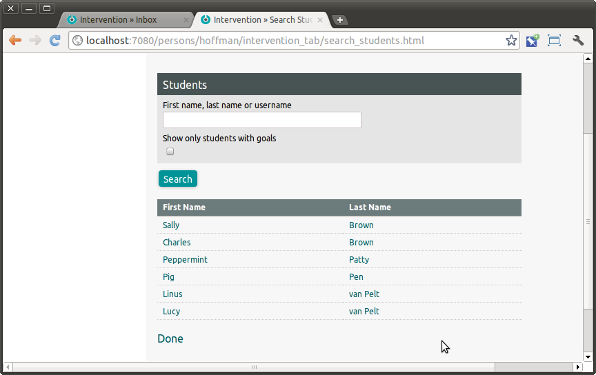

Intervention¶
Intervention helps teachers, students, administrators and parents to collaboratively set, monitor and achieve student goals.
When a teacher or school administrator clicks on the Intervention tab, they will see their Inbox view:
Messages, notifications and reminders are an important part of Interventions. If your SchoolTool users and contacts have email addresses in the system, and you have Outgoing Email, then emails will also be sent in addition to appearing in the Intervention inbox.
You will probably want users to receive email notifications.
Let’s say that Charles Brown is my student, and he is having problems getting along with other students in the playground. From the Intervention Inbox you can click Search: Students to find Charles (particularly easy when you only have six students):

Clicking on the student’s name will take you to this screen:
As you can see, there are two main aspects to the Interventions process, goals and messages. We will start by creating a goal by clicking on the green + next to Goals. You can then fill out the form describing the current situation for the student, people responsible and a description of the desired intervention:
After submitting the form it appears in the student’s list of goals:
As well as the teacher’s inbox:
Clicking on the goal provides the complete view:
CLicking on the edit pencil on the goal allows the user to update and edit it. When the goal is met is will show up with status “CLOSED:”
Messages are quite simple. Essentially it is like a simple email-like messaging system that is aware of the adults in the system who may have an important relationship to the student. If you have configured SchoolTool to act as an email client, you can also send email versions of the message.
The main reasons you might use this system instead of just sending emails are:
not having to remember which people are related to which students, including parents and advisors;
having a record of the messages independent of email delivery or deletion by recipient;
some people do not have access to email for some reason but do have access to SchoolTool.
To create a message click the green + next to Messages and fill out the form:
Thus: